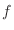

Next: Restraints.unpick_all() unselect Up: The Restraints class: static Previous: Restraints.make() make Contents Index
This command calculates and selects new distance restraints. See Restraints.make() for full details.
Distance restraints are generated for all pairs of atomswhere atom
is from selection atmsel1 and atom
is from selection atmsel2. Moreover, for a restraint to be created, at least one distance in the template structures must be less than maximal_distance (in Å). The mean of this basis pdf is equal to the template distance and its standard deviation
is calculated from an analytic model specified by distance_rsr_model. Use model 5 for Cα- Cα distances and model 6 for N-O distances. For models 1 through 6, this standard deviation is transformed by where
and
are given by restraint_stdev and is a gap weighting function of the form
. is the average distance of the two residues involved in the restraint from a gap. For models 3 through 6, this is additionally transformed by where the sum is over each of the atoms
and  are given by restraint_stdev2, and is the distance of each residue from a gap. The first six models are polynomials and depend on several structural features of the template and its similarity to the target. The polynomial coefficients are specified in library file '$PARAMS_LIB'. When “polynomial model” 7 is selected, the standard deviation of restraints is set to constant
In addition, the atom pairs restrained by homology-derived restraints must by default not be in a chemical bond, chemical angle, dihedral angle, or on an excluded pairs list. This behavior can be changed by resetting EnergyData.excl_local (see ConjugateGradients()).
If the restrained distance for a given atom pair is less than exclude_distance, that pair is also excluded from the nonbonded list. This is useful if you are building short distance restraints to approximate bonds.
An 'equivalent' distance is defined as the distance between a pair of equivalent atoms. See Atom.get_equivalent_atom() for the rules for determining equivalency.